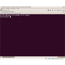
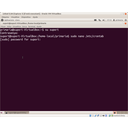
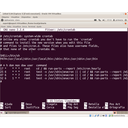
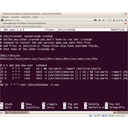
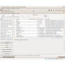
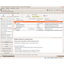

Pràctica 10. Aturada automàtica
Normalment ens interessa que els ordinadors no estiguin funcionant quan no hi ha d'haver ningú treballat, per fer aquesta tasca i que ningú ens ho pugui modificar el millor que podem fer és editar el fitxer crontab i posar la ordre. Anem a veure com és fa.
També veurem com aconseguir que ens surti una finestra d'avis per si hi ha algú treballant en aquell moment, pugui guardar els seus treballs abans no s'aturi el mateix.
Per últim hi ha un programa anomenat, Gshutdown, que permet que l'usuari que està a l'ordinador, programi quan es vol aturar, imaginem que estem descarregant una imatge de la linkat i ens diu que tardarà 5 hores, podem programar que al cap de 7 o 8 hores s'aturi i així no estarà tota la nit funcionant.
Edició de crontab
Per editar aquest fitxer ho tornarem fer des de la terminal, no ens espantem és ben senzill i ho explicarem pas a pas.
Pas 1. Obrim el terminal. Aplicacions -> Accessoris -> Terminal
Pas 2. Accedim al usuari administrador: su suport . Ens demanarà la contrasenya de l'administrador
Pas 3. Editem el fitxer crontab: sudo nano /etc/crontab
Pas 4. Ens desplacem a la última línia i escrivim la instrucció. Suposem que volem aturar l'ordinador cada dia a les 6 de la tarda: 00 18 * * * root /sbin/shutdown -h now
Pas 5. Desem tal com ens indica el programa: ctrl+x, i ens demana confirmació Y.
Si ens volem assegurar que funcioni reiniciem l'ordinador, tot i que normalment no cal.
Un problema que té aquest sistema és que l'ordinador s'atura, i no es pot evitar, per això algun cop algú s'ha queixat que no els sortia cap avís, per aquest motiu, tot seguit explicarem com aconseguir que ens surti un avis abans no és tanqui.
Edició crontab
 Pas 1. Obrim el terminal. Aplicacions -> Accessoris -> Terminal
Pas 1. Obrim el terminal. Aplicacions -> Accessoris -> Terminal
Pas 2. Accedim al usuari administrado: su suport . Ens demanarà la contrasenya de l'administrador
Pas 3. Editem el fitxer crontab: sudo nano /etc/crontab
Pas 4. Ens desplaçem a la última línia i escrivim: 00 18 * * * root /sbin/shutdown -h now
Pas 5. Desem tal com ens indica el probrama: ctrl+x, i ens demana confirmació Y.

Avís abans de tancar l'ordinador
Perquè ens surti una finestra que ens avisi abans de tancar-se l'ordinador, instal·larem un programa que ens permet programar accions en moments determinats, no ho hem fet servir abans perquè veureu que no demana contrasenya d'administrador, per tant ens ho pot manipular qualsevol persona.
Pas 1. Instal·lem el programa gnome-scheduled. Aplicacions -> Eines de sistema -> Administració -> Synaptic. El busquem i apliquem els canvis.
Pas 2. El posem en funcionament: Aplicacions -> Eines de sistema -> Scheduled task
Pas 3. Creem una nova programació prement sobre de Nou.
Pas 4. Triem una tasca recurrent, que s'executi sempre.
Pas 5. Posem un nom, premem sobre avançat i posem l'hora que volem que s'executi, per exemple les 17:55.
Pas 6. A comandament posem que ens surti una finestra emergent amb un missatge personalitzat: zenity --info --text "L'ordinador s'aturarà en 5 minuts"
Pas 7. Important: A sota hem de seleccionar que és una Xapplication, d'altra manera no ens sortirà la finestra.
A partir d'ara, si ningú ens ho toca, ja ens sortirà la finestra d'avis.
Avis de tancament d'ordinador
- Pas 1. Instal·lem el programa gnome-scheduled

Pas 1. Instal·lem el programa gnome-scheduled
Pas 1. Instal·lem el programa gnome-scheduled- El posem en funcionament
- Creem una nova programació
- Triem una tasca recurrent
- Posem un nom
 A comandament posem que ens surti una finestra emergent amb un missatge personalitzat: zenity --info --text "L'ordinador s'aturarà en 5 minuts". X application
A comandament posem que ens surti una finestra emergent amb un missatge personalitzat: zenity --info --text "L'ordinador s'aturarà en 5 minuts". X application


Llicenciat sota la Llicència Creative Commons Reconeixement NoComercial CompartirIgual 4.0